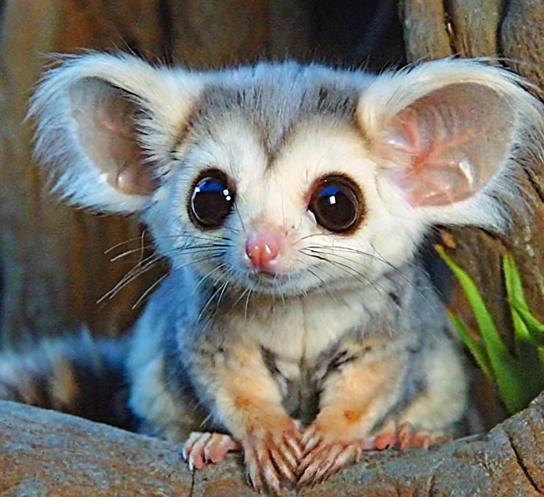
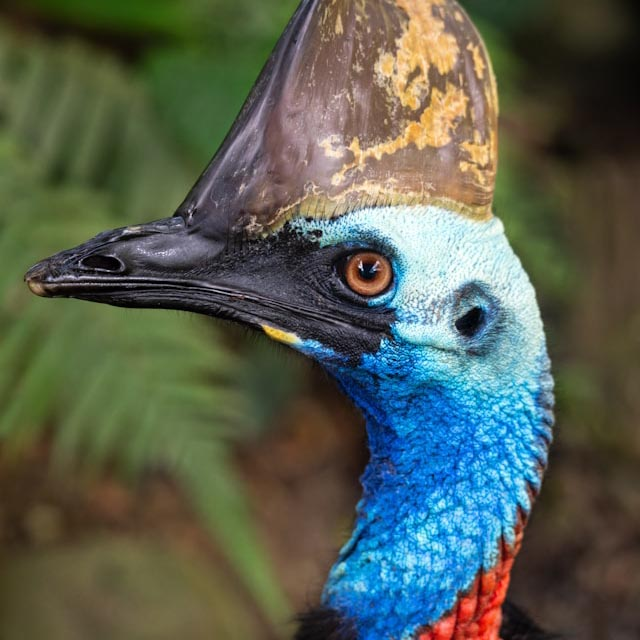
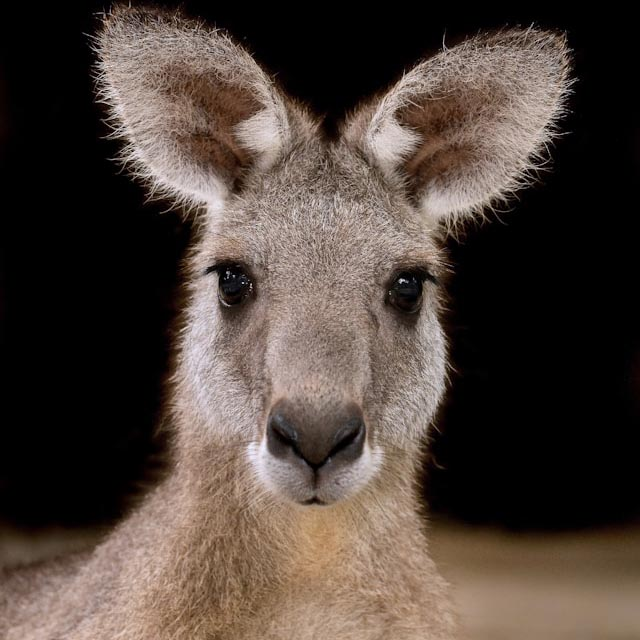
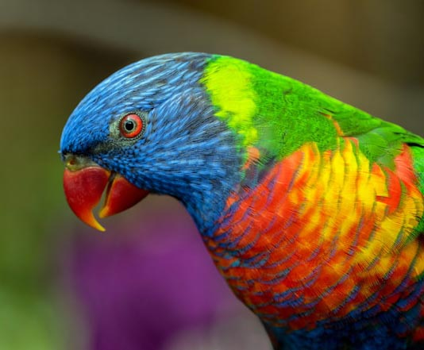
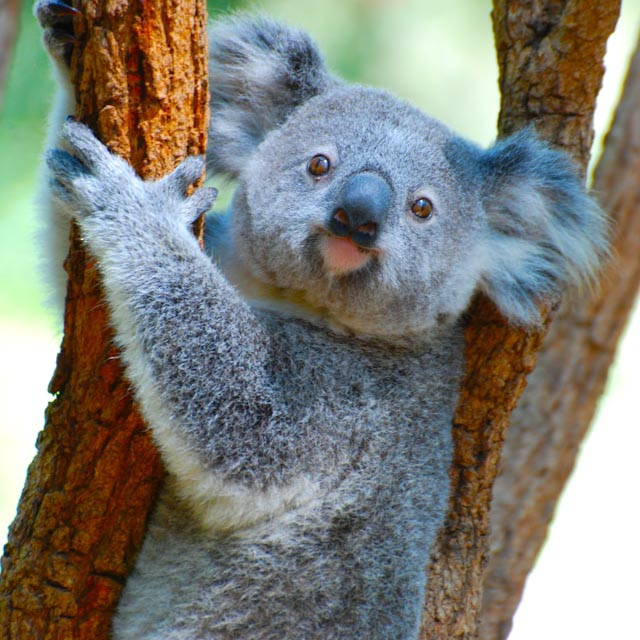
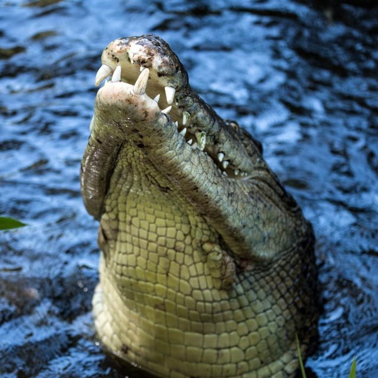
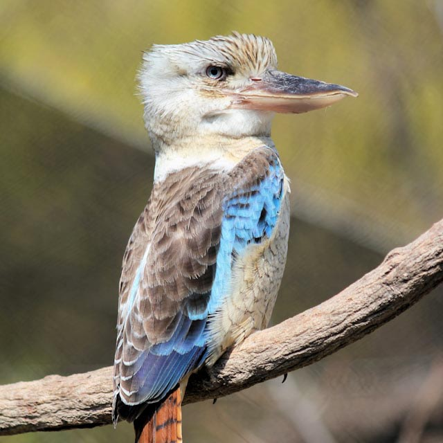

Fauna of Australia
The fauna of Australia consists of a large variety of animals; some 46% of birds, 69% of mammals, 94% of amphibians, and 93% of reptiles that inhabit the continent are endemic to it. This high level of endemism can be attributed to the continent’s long geographic isolation, tectonic stability, and the effects of a unique pattern of climate change on the soil and flora over geological time. A unique feature of Australia’s fauna is the relative scarcity of native placental mammals. Consequently, the marsupials — a group of mammals that raise their young in a pouch — occupy many of the ecological niches placental animals occupy elsewhere in the world. Uniquely, Australia has more venomous than non-venomous species of snakes.

Northern Greater Glider
The northern greater glider is a species of gliding marsupial endemic to the forests of north-central Queensland, Australia. It is the smallest of the three greater glider species, growing to the size of a small ringtail possum. It can be distinguished from the other two species by its exclusively brownish-grey pelage, with a cream underside.
Read more …
Cassowary
Cassowaries are flightless birds. They are classified as ratites: flightless birds without a keel on their sternum bones. Cassowaries are native to the tropical forests of New Guinea (Papua New Guinea and West Papua), the Aru Islands (Maluku), and northeastern Australia.
Read more …
Kangaroo
The red kangaroo is the largest of all kangaroos, the largest terrestrial mammal native to Australia, and the largest extant marsupial. It is found across mainland Australia, except for the more fertile areas, such as southern Western Australia, the eastern and southeastern coasts, and the rainforests along the northern coast.
Read more …
Parrot
Parrots are conformed by four families, found mostly in tropical and subtropical regions. The four families are the Old World parrots, African and New World parrots, cockatoos, and New Zealand parrots.
One-third of all parrot species are threatened by extinction, with a higher aggregate extinction risk than any other comparable bird group. The greatest diversity of parrots is in South America and Australasia.
Read more …
Koala
The koala, sometimes called the koala bear, is easily recognisable by its stout, tailless body and large head with round, fluffy ears and large, dark nose. Koalas typically inhabit open Eucalyptus woodland, as the leaves of these trees make up most of their diet. This eucalypt diet has low nutritional and caloric content and contains toxic compounds that deter most other mammals from feeding on it. Koalas are largely sedentary and sleep up to twenty hours a day.
Read more …
Crocodile
Crocodiles are large semiaquatic reptiles that live throughout the tropics in Africa, Asia, the Americas and Australia. The term crocodile is sometimes used even more loosely to include all extant members of the order Crocodilia, which includes the alligators and caimans. Although they appear similar, crocodiles and alligators belong to separate biological families.
Read more …
Kookaburra
Kookaburras are terrestrial tree kingfishers native to Australia and New Guinea, which grow to between 28 and 47 cm (11 and 19 in) in length. The name is a loanword from Wiradjuri guuguubarra, onomatopoeic of its call. The loud, distinctive call of the laughing kookaburra is widely used as a stock sound effect in situations that involve an Australian bush setting or tropical jungle, especially in older movies.
Read more …